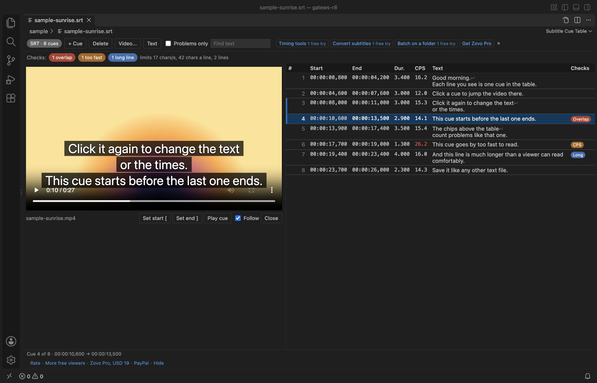

Subtitles & SRT Editor, VTT
Subtitles & SRT Editor, VTT, a VS Code extension by Zovo
Edit SRT, WebVTT, ASS, SSA and SBV subtitles in VS Code as a table of cues, with your own video playing beside it and the cues drawn on the picture. Works offline, made by Zovo.
Free, MIT license. Needs VS Code 1.75.0 or newer. Extension ID zovo.zovo-subtitles-editor, version 0.1.2.

Free, with no account and no network calls:
- Click a
.srt,.vtt,.ass,.ssaor.sbvfile and it opens as a cue table: number, start, end, duration, characters per second and text. - Click a selected cell to edit it. Every change goes into the text file itself, so undo, redo, save and the dirty dot work as usual, and the same file open as text (the Text button) changes with it.
- Add and delete cues; SRT numbers are redone for you. Find text, or show only the cues with a problem.
- A video or audio file with the same name (movie.mp4 for movie.srt or movie.en.srt) plays beside the table, with the cues drawn on it. Click a cue to jump there, Set start and Set end take the video time, and Play cue plays just that cue.
- Checks on every change: overlapping cues, zero or negative durations, reading speed (characters per second), lines that are too long and cues with too many lines. The limits are settings.
- Files that players would skip in part, such as a missing blank line or a bad time, get a plain message with the line number. A WebVTT file without its WEBVTT line says so instead of showing an empty table.
Zovo Pro: USD 19 once, for the Pro tools in every Zovo extension. Each Pro tool has 1 free try on your computer first:
- Timing tools: shift all or the selected cues, stretch the timing between two sync points, change the frame rate (for example 25 to 23.976 fps) and end overlapping cues before the next one starts. Each run is one undo step.
- Convert subtitles: write the file as SRT, WebVTT, ASS, SBV or TTML next to the original. Italic, bold and underline carry over where the target format has them.
- Batch on a folder: check, convert or shift every subtitle file in a folder and its subfolders in one run. The new files go to a new folder, with a Markdown report.
Questions people ask
Is Subtitles & SRT Editor, VTT free?
Yes. Subtitles & SRT Editor, VTT is free and MIT licensed.
How do I install Subtitles & SRT Editor, VTT?
Click "Install in VS Code" above, or search for zovo.zovo-subtitles-editor in the Extensions view.
How to use it
- Click a subtitle file in the Explorer. To see the plain text instead, click Text in the table toolbar or use Reopen Editor With. Right-click a subtitle file and choose Open in Subtitle Cue Table to come back.
- In the table, the arrow keys move between cues, Enter edits the text (Shift+Enter for a new line), Tab moves to the next cell and Escape cancels. Insert adds a cue, Delete removes the selected cues,
[and]set the start and end from the video, P plays the cue. - Times can be typed as
00:01:02,500,1:02.5or62.5. - If no video sits next to the file, click Video... to pick one. Only that video's folder is opened to the player.
- To try it without your own files, run Subtitles: Open the Sample Subtitles and Video from the Command Palette. The sample has one overlap, one fast cue and one long line on purpose.
- The Pro tools are in the Command Palette (Subtitles: ... (Pro)), in the Explorer right-click menu for subtitle files and folders, and in the small row at the end of the table toolbar. The row closes with its x for the rest of the session, and the setting
subtitlesEditor.showProToolshides it for good.
Which videos play
The player is VS Code's own, so it plays what VS Code can decode. We tested VS Code 1.142 on macOS with clips made by ffmpeg:
| File | Picture | Sound |
|---|---|---|
| MP4 or MOV with H.264 video | plays | MP3 plays; AAC sound stays silent |
| MP4 with VP9 video | plays | |
| WebM (VP9 and Opus) and MKV | does not play | |
| MP3, WAV or FLAC audio file | plays | |
| Ogg (Opus) or M4A (AAC) audio file | does not play |
When a file does not play, the table says so and still works. A copy that plays can be made with ffmpeg, for example ffmpeg -i input.mkv -c:v libx264 -c:a libmp3lame output.mp4.
What it reads
| Format | Read and edited in place | Notes |
|---|---|---|
SubRip .srt | numbers, times, text, position values after the times | numbers are redone after adding or deleting a cue |
WebVTT .vtt | cue ids, times, cue settings, text | NOTE, STYLE and REGION blocks stay as they are; parsed the way the WebVTT standard says |
ASS .ass and SSA .ssa | Dialogue lines: times and text (\N shows as a new line) | styles, layers, margins, effects and Comment lines stay as they are |
SubViewer .sbv | times and text | |
TTML .ttml, .dfxp | read by the Pro converter |
Privacy
The extension reads the subtitle file you open and, when there is one, plays the video beside it from your disk. It makes no network calls, and nothing is uploaded or measured. The webview may load files only from the extension's own folder and from the folder of the video you play. The Pro tools write only the files they name. The links at the bottom of the table (Rate, More free viewers, Zovo Pro) open a page only when you click them, and the setting subtitlesEditor.showSupportLinks hides them.
Settings
| Setting | Default | What it does |
|---|---|---|
subtitlesEditor.maxCharsPerSecond | 17 | Reading speed limit. Line breaks do not count. 0 turns the check off. |
subtitlesEditor.maxLineLength | 42 | Longest line in characters. 0 turns the check off. |
subtitlesEditor.maxLines | 2 | Most lines in one cue. 0 turns the check off. |
subtitlesEditor.minDurationSeconds | 0 | Shortest time on screen; 0 flags only zero and negative durations. |
subtitlesEditor.findVideo | true | Plays the video with the same name, or the only video in the folder, beside the table. |
subtitlesEditor.overlapGapMs | 0 | Gap that Fix overlaps (Pro) leaves before the next cue. |
subtitlesEditor.showProTools | true | Shows the Pro tools in menus, the palette and the toolbar row. |
subtitlesEditor.showSupportLinks | true | Shows the Rate, More free viewers and Zovo Pro links. |
subtitlesEditor.askForRating | true | Asks once for a rating after two good uses at least 30 minutes apart. |
Zovo Pro
One payment of USD 19 unlocks the Pro tools in every Zovo extension on your computers; a team of 5 is USD 59. The key works offline. Run Zovo Pro: Get Zovo Pro from the Command Palette, or click Get Zovo Pro in the toolbar row. The Zovo Pro tab lists this extension's Pro tools and your free tries before any payment page opens.
License
MIT. Made by Zovo.
Install Subtitles & SRT Editor, VTT
Click the button to open VS Code and install it, or press Ctrl+P (Cmd+P on macOS) in VS Code and run ext install zovo.zovo-subtitles-editor.
Free, MIT license. Needs VS Code 1.75.0 or newer. Extension ID zovo.zovo-subtitles-editor, version 0.1.2.
Source code and issues are on GitHub.
Zovo Pro and support
Zovo Pro: USD 19 once, every Zovo viewer. It turns on the Pro tools in this extension and in the other Zovo extensions you use. The free features stay free.
After a card payment your license key shows on the next page. Paste it with the command "Zovo Pro: Enter a key".
You can also support the work with no Pro:
Need your format supported?
Open a format request with a sample file, and I reply there whether it can be done. For USD 299 once, through this GitHub Sponsors tier, I add your file format or a missing feature to this extension, with tests, within 7 days.